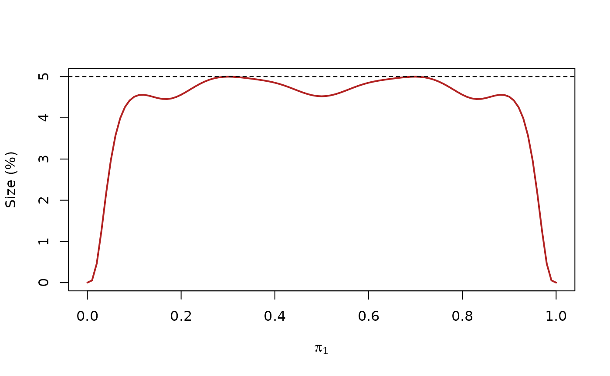

The non-conservative, size-\(\alpha\) modified Fisher exact test (MFET) rejects the null at a critical value only when the corresponding randomisation probability exceeds a threshold \(\gamma_0\), chosen so the test’s size (maximised over the nuisance parameter) is as large as possible without exceeding \(\alpha\). This makes it less conservative than the standard Fisher exact test while still strictly controlling the Type I error rate. For why this matters and how it compares to other tests, see the Background and comparison article; for how it is built, see Overview of algorithm.
This vignette is a tour of modified_fisher_exact_test(),
using the worked examples from van der Meulen, Raymond and van der
Meulen (2021).
Basic usage
The test compares two independent binomial proportions \(u/m\) and \(v/n\), testing \(H_0: \theta = \theta_0\) where \(\theta\) is the log odds ratio. By default
odds_ratio = 1 (equality of proportions).
We reproduce Example 2 from the paper’s Table 2: 13 of 41 versus 6 of 47.
result <- modified_fisher_exact_test(u = 13, m = 41, v = 6, n = 47,
odds_ratio = 1, local_size_data = TRUE)
result
#>
#> Non-Conservative Size-α Modified Fisher's Exact Test
#>
#> data: u = 13, v = 6, m = 41, n = 47
#> p-value = 0.03369
#> alternative hypothesis: true odds ratio is not equal to 1
#> 95 percent confidence interval:
#> 1.082336 10.249348
#> sample estimates:
#> odds ratio
#> 3.172619The result is an htest, so the usual components are
available directly, and they match Table 2 (odds ratio 3.173, p-value
0.034, 95% CI 1.082 to 10.25):
result$estimate
#> odds ratio
#> 3.172619
result$p.value
#> [1] 0.03369141
result$conf.int
#> [1] 1.082336 10.249348
#> attr(,"conf.level")
#> [1] 0.95P-values and confidence intervals agree
Both are derived from the same test, so odds_ratio is
rejected at level alpha if and only if it falls outside
conf.int. The two can never disagree. This is not true of
stats::fisher.test() or the SAS Proc FREQ exact test, whose
p-values and intervals are built separately and can conflict. The Background and comparison
article shows a worked case.
A different null hypothesis
odds_ratio sets \(\theta_0\) and need not be 1. The estimate
and confidence interval do not depend on it; only the p-value and
$null.value change.
result_or2 <- modified_fisher_exact_test(u = 13, m = 41, v = 6, n = 47,
odds_ratio = 2)
result_or2$p.value
#> [1] 0.4360352
result_or2$conf.int
#> [1] 1.082336 10.249348
#> attr(,"conf.level")
#> [1] 0.95Precision and optimisation method
Two arguments control the numerics:
-
precisionis the tolerance for the bisection searches behind the confidence limits and p-value (default1e-3). A smaller value is more accurate but needs more size evaluations, which is the expensive step. -
methodselects how the size is maximised over the nuisance parameter. The default"zoom"refines a grid search and is usually fastest;"trust"uses a trust-region optimiser with an analytic gradient. They agree to withinprecision. For"zoom",mazesets the grid points per iteration andzoom_iterthe number of refinements.
result_trust <- modified_fisher_exact_test(u = 13, m = 41, v = 6, n = 47,
odds_ratio = 1, method = "trust")
result_trust$p.value
#> [1] 0.03369141Power
By default the test also returns its power at two response rates
power_at_pi1 and power_at_pi2, under the null
odds_ratio used to build the test frame. This is the
unconditional probability of rejecting \(H_0\) at those true rates and sample
sizes.
result_power <- modified_fisher_exact_test(u = 13, m = 41, v = 6, n = 47,
odds_ratio = 1,
power_at_pi1 = 0.3, power_at_pi2 = 0.6)
result_power$power
#> [1] 80.40905Set power = FALSE to skip this, which saves time for
larger samples. Setting superiority = TRUE restricts the
calculation to a positive observed effect (one-directional alternative),
which the paper notes changes power only slightly for relevant effect
sizes.
result_sup <- modified_fisher_exact_test(u = 13, m = 41, v = 6, n = 47,
odds_ratio = 1,
power_at_pi1 = 0.3, power_at_pi2 = 0.6,
superiority = TRUE)
result_sup$power
#> [1] 80.409Diagnostic: plotting the size
The size of the MFET is found numerically, so it is worth confirming
the optimiser has not mistaken a local peak for the global one.
local_size_data = TRUE attaches the local size at 101
values of the nuisance parameter \(\pi_1\):
head(result$local.size.data)
#> pi1 size method
#> 1 0.00 0.00000000 zoom
#> 2 0.01 0.05426853 zoom
#> 3 0.02 0.46179445 zoom
#> 4 0.03 1.25223277 zoom
#> 5 0.04 2.16089076 zoom
#> 6 0.05 2.96284034 zoom
plot(size ~ pi1, data = result$local.size.data,
type = "l", col = "firebrick", lwd = 2,
xlab = expression(pi[1]), ylab = "Size (%)")
abline(h = 0.05 * 100, lty = 2)
The curve should stay at or below \(\alpha \times 100\%\) throughout, touching it across a broad central region. That is the non-conservative behaviour behind the MFET’s power advantage.
Internals: gamma0 and the test frame
For advanced use or for checking against the original SAS/IML macro,
the result exposes the threshold and the full test frame.
$gamma0 is the optimal \(\gamma_0\); $support.data
holds, for every total \(T\), the
critical values \(c_1, c_2\) and
randomisation probabilities \(\gamma_1,
\gamma_2\).
result$gamma0
#> [1] 0.4950519
head(result$support.data)
#> t c1 d1 gamma1 c2 d2 gamma2
#> 1 0 0 0 0.0250000 0 1 0.0250000
#> 2 1 0 0 0.0500000 1 2 0.0500000
#> 3 2 0 0 0.0945652 2 3 0.1087500
#> 4 3 0 0 0.1807246 3 4 0.2398077
#> 5 4 0 0 0.3491271 4 4 0.5364119
#> 6 5 0 1 0.6554145 4 5 0.0428649The boundary outcomes the MFET rejects (but the conservative test does not) are exactly those with a randomisation probability above the threshold:
subset(result$support.data, gamma1 > result$gamma0 | gamma2 > result$gamma0)
#> t c1 d1 gamma1 c2 d2 gamma2
#> 5 4 0 0 0.3491271 4 4 0.5364119
#> 6 5 0 1 0.6554145 4 5 0.0428649
#> 8 7 1 1 0.2337006 6 6 0.6111712
#> 9 8 1 2 0.5169722 6 7 0.0852055
#> 10 9 1 2 0.9803533 7 8 0.4001280
#> 11 10 2 2 0.2198852 8 8 0.8747505
#> 12 11 2 3 0.5174349 8 9 0.2309683
#> 13 12 3 3 0.0072742 9 9 0.6657947
#> 15 14 3 4 0.6087134 10 10 0.4950519
#> 18 17 4 5 0.7890628 12 12 0.9331548
#> 20 19 5 6 0.5165288 13 13 0.8006534
#> 22 21 6 6 0.3163047 14 14 0.7126309
#> 23 22 6 7 0.7373777 14 15 0.1989687
#> 24 23 7 7 0.1586046 15 15 0.6565864
#> 25 24 7 8 0.5268783 15 16 0.1606163
#> 26 25 8 8 0.0283864 16 16 0.6253905
#> 28 27 8 9 0.8235340 17 17 0.5960512
#> 30 29 9 10 0.6356104 18 18 0.5778886
#> 32 31 10 11 0.4841665 19 19 0.5749891
#> 34 33 11 11 0.3592251 20 20 0.5863044
#> 35 34 11 12 0.8468401 20 21 0.1424674
#> 36 35 12 12 0.2544432 21 21 0.6113470
#> 37 36 12 13 0.7024766 21 22 0.1600169
#> 38 37 13 13 0.1656454 22 22 0.6501001
#> 39 38 13 14 0.5826859 22 23 0.1870078
#> 40 39 14 14 0.0900074 23 23 0.7029931
#> 42 41 15 15 0.0255816 24 24 0.7709303
#> 44 43 15 16 0.9406416 25 25 0.8491776
#> 46 45 16 17 0.8491776 26 26 0.9406416
#> 48 47 17 18 0.7709303 26 27 0.0255816
#> 50 49 18 19 0.7029931 27 28 0.0900074
#> 51 50 19 19 0.1870078 28 28 0.5826859
#> 52 51 19 20 0.6501001 28 29 0.1656454
#> 53 52 20 20 0.1600169 29 29 0.7024766
#> 54 53 20 21 0.6113470 29 30 0.2544432
#> 55 54 21 21 0.1424674 30 30 0.8468401
#> 56 55 21 22 0.5863044 30 30 0.3592251
#> 58 57 22 23 0.5749891 31 31 0.4841665
#> 60 59 23 24 0.5778886 32 32 0.6356104
#> 62 61 24 25 0.5960512 33 33 0.8235340
#> 64 63 25 26 0.6253905 33 34 0.0283864
#> 65 64 26 26 0.1606163 34 34 0.5268783
#> 66 65 26 27 0.6565864 34 35 0.1586046
#> 67 66 27 27 0.1989687 35 35 0.7373777
#> 68 67 27 28 0.7126309 35 35 0.3163047
#> 70 69 28 29 0.8006534 36 36 0.5165288
#> 72 71 29 30 0.9331548 37 37 0.7890628
#> 75 74 31 32 0.4950519 38 38 0.6087134
#> 77 76 32 33 0.6657947 38 39 0.0072742
#> 78 77 33 33 0.2309683 39 39 0.5174349
#> 79 78 33 34 0.8747505 39 39 0.2198852
#> 80 79 34 35 0.4001280 40 40 0.9803533
#> 81 80 35 35 0.0852055 40 40 0.5169722
#> 82 81 35 36 0.6111712 40 40 0.2337006
#> 84 83 37 37 0.0428649 41 41 0.6554145
#> 85 84 37 38 0.5364119 41 41 0.3491271The mechanics of this are covered in Overview of algorithm, and the size and power of the comparison tests in Reproducing the paper’s figures.
References
van der Meulen EA, Raymond K, van der Meulen PJ (2021). Consistent Confidence Limits, P Values, and Power of the Non-Conservative, Size-\(\alpha\) Modified Fisher Exact Test. Journal of Biostatistics and Biometric Applications, 6(1):102.
van der Meulen EA (2008). A Nonrandomized, Nonconservative Version of the Fisher Exact Test. Communications in Statistics - Theory and Methods, 37:699-708.